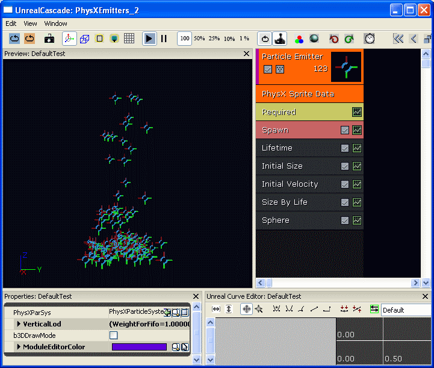

UDN
Search public documentation:
PhysXParticleSystemReferenceCH
English Translation
日本語訳
한국어
Interested in the Unreal Engine?
Visit the Unreal Technology site.
Looking for jobs and company info?
Check out the Epic games site.
Questions about support via UDN?
Contact the UDN Staff
日本語訳
한국어
Interested in the Unreal Engine?
Visit the Unreal Technology site.
Looking for jobs and company info?
Check out the Epic games site.
Questions about support via UDN?
Contact the UDN Staff
PhysX 粒子系统参考指南
概述
PhysXParticleSystem 是 PhysX 流体参数的容器。在编辑器中，这组参数以更加清晰的方式组织起来，同时在2.8.0版本(已经集成到引擎中)中还有一些反映新参数的文本域。PhysXParticleSystem可以由很多个粒子发射器共享，这使得您可以很轻松地重新使用您的粒子仿真的物理方面的调整设置。PhysXParticleSystem提供了粒子运动和同PhysX场景的碰撞。另外，可以配置该系统来执行 SPH（平滑的粒子流体力学）流体仿真。 可以通过从PhysX发射器类型数据模块中引用这些 PhysXParticleSystem 对象来使用它们。可以从这两个模块中进行选择： PhysXMeshTypeData 和 PhysXSpriteTypeData 。这两种发射器类型都提供了用于调整全局LOD行为的参数。 PhysXMeshTypeData 可以用于把粒子显示为正在旋转的网格物体。它适用于模拟较小的简单的物体，比如碎片或树叶。为了获得大量的粒子特效，已经通过使用快速实例化的渲染通道优化了这种类型的发射器。 PhysXSpriteTypeData 可以通过 PhysXParticleSystem 驱动所有各种平面粒子的动画。 对于使用PhysXParticleSystem对象模拟的所有粒子来说，可以控制LOD。并且可以调整单个粒子发射器的仿真粒子的总量、粒子生命周期及产生时的行为。
PhysXParticleSystem(PhysX粒子系统)
要想创建一个新的 PhysXParticleSystem，只需右击内容浏览器并选择“New PhysXParticleSystem（新建 PhysX 粒子系统）”。接下来在双击这个图标后可以对 PhysXParticleSystem 进行编辑。
 在前三个类别栏中列出了大部分常用的参数： Buffer(缓冲) 、 Collision(碰撞) Dynamics(动态) 。那些较少使用的或者比较难于调整的参数位于 SdkExpert 下面，比如SPH参数。
在前三个类别栏中列出了大部分常用的参数： Buffer(缓冲) 、 Collision(碰撞) Dynamics(动态) 。那些较少使用的或者比较难于调整的参数位于 SdkExpert 下面，比如SPH参数。
- Buffer（缓冲）
- MaxParticles（最大粒子数量） - 该 PhysXParticleSystem 的粒子的最大总数。
- Collision（碰撞）
- bDynamicCollision - 启用/禁用与动态刚体之间的碰撞。
- CollisionDistance - 粒子和刚体表面产生碰撞的距离。
- FrictionWithDynamicShapes - 和动态刚体之间碰撞的摩擦力系数。
- FrictionWithStaticShapes - 和静态刚体之间碰撞的摩擦力系数。
- RestitutionWithDynamicShapes - 和动态刚体之间的碰撞的复原系数。
- RestitutionWithStaticShapes - 和静态刚体之间碰撞的复原系数。
- Dynamics
- bDisableGravity - 禁用 PhysXParticleSystem 的场景重力。
- Damping - 速度阻尼。
- ExternalAcceleration - 应用到每个仿真步骤中的加速度向量。
- MaxMotionDistance - 限制粒子在一次仿真步骤中可以移动的距离。
- SdkExpert
- bStaticCollision - 启用/禁用与静态刚体之间的碰撞。
- bTwoWayCollision - 启用/禁用粒子与刚体之间的双向碰撞。
- CollisionResponseCoefficient - 双向交互的比例系数。
- KernelRadiusMultiplier - 为 SPH 定义了相对于 RestParticleDistance 的粒子交互半径。
- PacketSizeMultiplier - 定义了相对的网格单元尺寸，用于并行计算。
- RestDensity - 设置粒子的质量，值1000左右对于SPH来说能产生较好的效果。
- RestParticleDistance - 定义静止状态中的粒子的间距。
- SimulationMethod - 启用/禁用 SPH 计算。
- Stiffness - SPH 硬度。
- Viscosity - SPH 粘度。
- 启用 bTwoWayCollision 将会禁用碰撞的网格物体粒子的自动定位功能。
- 如果使用SPH， KernelRadiusMultiplier 一般应该介于1.7和2.0之间才能获得较好的性能和表现。
- 当不是用SPH, RestDensity 可以用于缩放粒子上的力场效果。这可能是需要的，因为目前 PhysX 力场不支持特定的缩放功能。
- 对于给定效果， CollisionDistance 、尤其是 MaxMotionDistance 的值应该设置的尽可能地低。
- 为了进行并行计算，在空间中使用了规则网格。网格单元(包)既用于碰撞也用于SPH动态。
- 使用以下参数定义包的大小: KernelRadiusMultiplier * RestParticleDistance * PacketSizeMultiplier。
- 包的大小对于让给定应用实例获得良好的性能是非常重要的:
- 使用少量的包 (较大的包)一般会获得更好的性能。
- 包的大小在计算时间方面会影响碰撞的效率 (同时也影响PPU[物理处理单元]上的内存使用)。
- 对于SPH，使用以下三个相对严格的值定义了包的大小。
- KernelRadiusMultlier 设置为2.0左右的值。
- RestParticleDistance 由特效范围给定。
- PacketSizeMultiplier 可以根据粒子的稀疏程度选择。如果粒子是相对密集的，那么选择较小的尺寸。
- 对于非交互的粒子，需要选择碰撞的最佳集合。
- 为了降低PPU上的内存消耗， KernelRadiusMultiplier 和 RestParticleDistance 可以选择相对于 PacketSizeMultiplier 来说非常大的值。
PhysX网格物体发射器
PhysXMeshEmitter可以通过在Cascade中的"Type Data(类型数据)"域中选择"PhysX Mesh Data(PhysX网格物体数据)"来创建。
 "PhysX Mesh Data(PhysX网格物体数据)"的属性对话框包含了几个针对PhysX的属性：
"PhysX Mesh Data(PhysX网格物体数据)"的属性对话框包含了几个针对PhysX的属性：
- PhysXParSys - 用于模拟粒子的 PhysXParticleSystem。
- PhysXRotationMethod - 选择一种反应您的粒子网格物体的基本形状特征的方法。
- FluidRotationCoefficient - 定义了导致粒子网格物体旋转的线速度或碰撞的大小。
- VerticalLod - 全局 EmitterLodControl 控制的参数。
- 如果可能，请尝试为不同的粒子发射器共享相同的PhysXParticleSystem。
- 通用的PhysXRotationMethod应该和您的网格物体尽可能地匹配。为了更好地匹配，您可能需要重新调整网格物体的方位。
PhysX平面粒子发射器
PhysXSpriteEmitter 可以通过在Cascade中的"Type Data(类型数据)"域中选择"PhysX Sprite Data(PhysX 平面实例数据)"来创建。

"PhysX Sprite Data(PhysX平面粒子数据)"的属性对话框包含了几个针对PhysX的属性：- PhysXParSys - 用于模拟粒子的 PhysXParticleSystem。
- VerticalLod - 全局 EmitterLodControl 控制的参数。
全局粒子LOD
虚幻粒子发射器系统提供了基于距离的LOD功能。PhysX粒子发射器实现提供了附加的LOD机制，这使您可以设置全局粒子预算。 有两种应用全局粒子LOD的方法，它们的作用是一致的。
- FIFO mode - 粒子发射器特效的粒子被组织在一个优先级队列中。较老的粒子优先级较低，并且如果粒子数量超出了粒子预算则先删除这些这些较旧的粒子。对于不同的粒子发射器特效来说，也可以配置其删除粒子的优先级。
- Emission volume reduction - 为了满足特定发射器的粒子预算，可以减小发射体积。体积定义为平均粒子生命周期的值和平均粒子速率的值的乘积。所有的粒子预算分布在所有激活的粒子发射器上。
- BaseEngine.ini （对应的游戏 ...Engine.ini，在 "[Engine.PhysicsLODVerticalEmitter]" 下面）
- ParticlePercentage - 以百分比的形式定义了全局LOD设置。
- 默认值： 100
- ParticlePercentage - 以百分比的形式定义了全局LOD设置。
- WorldInfo.Physics.VerticalProperties.Emitters
- ParticlesLodMin - ParticlePercentage 为0的地图的全局粒子预算量。
- ParticlesLodMax - ParticlePercentage 为100的地图的全局粒子预算量。
- bApplyCylindricalPacketCulling - 如果设置该项，那么包距离按照相机周围的水平面进行计算。
- PacketsPerPhysXParticleSystemMax - 每个 PhysXParticleSystem 的流体包数量的上线。在 50 到 600 之间的值都可以，但是尽量少使用数值。
- SpawnLodVsFifoBias - 设置全局粒子数量限制对粒子发射器产生速率和生命周期的影响程度。0意味着不减少发射体积。
- PhysXMeshTypeData.VerticalLOD / PhysXSpriteTypeData.VerticalLOD
- WeightForFifo - 粒子发射器特效相对于正在删除的较旧的粒子的相对权重。如果可能，相对较低的值使得系统从另一个发射器特效中删除粒子。
- WeightForSpawnLOD - 和 WeightForFIFO 一样, 但它是相对于发射体积降低量的权重。
- SpawnLodRateVsLifeBias - 定义了通过降低粒子产生速率或降低粒子生命周期对粒子产生体积所造成的影响程度。
- RelativeFadeoutTime - 需要将其设置为粒子生命周期的一部分，用于图像化地使粒子淡出。LOD系统将尝试淡出粒子而不是立即删除它们。
限制和已知问题
- PhysXMeshTypeData 发射器只支持 SizeByLife 更新模块。我们打算扩展该功能，使它至少支持运行时的顶点颜色更新。
- PhysX发射器的不能进行正确的运行时预览。 *目前所有的同种类型的 PhysXMeshTypeData 发射器都是一批中渲染的。以后，我们设置自定义分组发射器实例功能，以便可以分批渲染。
- PhysX发射器不能和Cascade预览碰撞网格物体协同工作。
- 不支持粒子发射器预热时间。
- 不支持 bUseLocalSpace ！ （所有 PhysX 粒子都会使用世界空间）。
下载
- 下载物理粒子系统的示例。